Console Commands
In TUI mode, press \ to open the console bar at the bottom of the screen. Type a command and press Enter. Esc or \ closes the bar without running anything.
| Command | What it does |
|---|---|
focus <node>... |
Show only the lines of one or more nodes |
level <lvl> |
Show only lines at a severity or worse |
grep <text> |
Show only lines containing some text |
find <text> |
Jump between lines containing some text |
mute <node> |
Hide one node's lines |
unmute <node\|all> |
Show a muted node again |
mark [label] |
Insert a timestamped separator line |
tee <file> [-c] [-a] |
Save the lines currently shown to a file |
clear |
Back to the full, unfiltered log |
help |
Show every command and key |
Filtering never deletes anything. Lines that arrive while a filter is active are still recorded, and they reappear as soon as you remove the filter.
All of these commands except help can also be sent from another terminal, see Remote Control & Reopen.
What it looks like
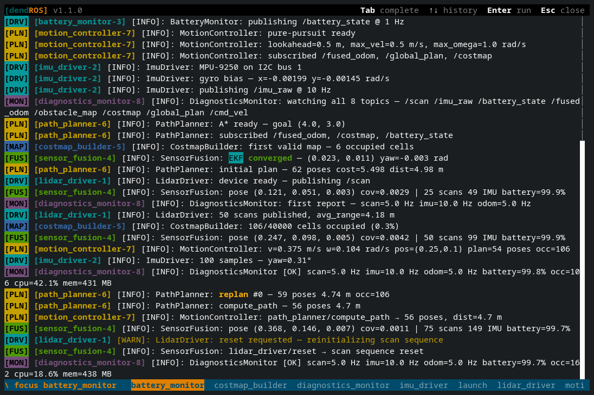
focus <node>...
Shows only the lines of the nodes you list.
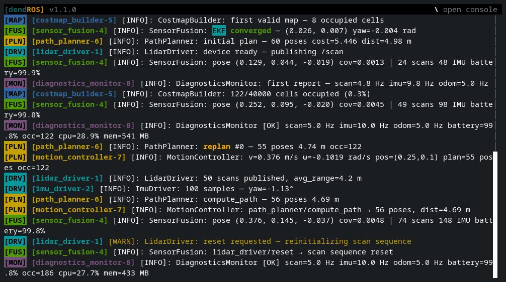
Separate names with spaces (commas work too). A line is shown if it belongs to any of the listed nodes. Running focus again replaces the list.
You can use either the launch process name (the talker in [talker-1]) or the node's ROS logger name. A leading / is optional.
Composable nodes
Components loaded into a container print under the container's process name, but each one logs under its own logger name. focus my_container shows the container and all its components; focus my_component shows just that component.
Only nodes that have printed at least one line (including the launch's own process started line) can be focused. If any name is unknown, the header shows an error naming it and the current view stays as it was.
The header chip lists the focused nodes, for example focus talker, listener. Long lists are shortened to focus a, b +3.
level <lvl>
Shows only lines at the given severity or worse. Levels, from lowest to highest: debug, info, warn, error, fatal (warning also works, and case doesn't matter).
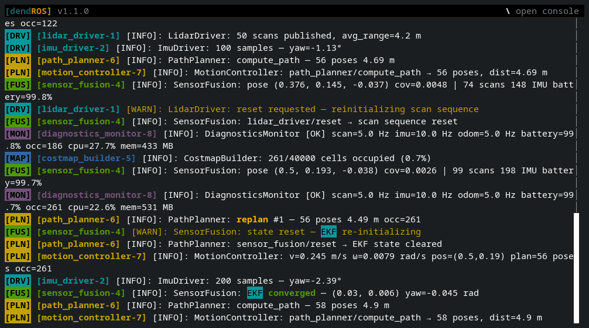
Lines without a severity, such as Python tracebacks, print() output and DendROS alerts, always stay visible, so a crash is never hidden by a level filter.
grep <text>
Shows only lines containing the text.
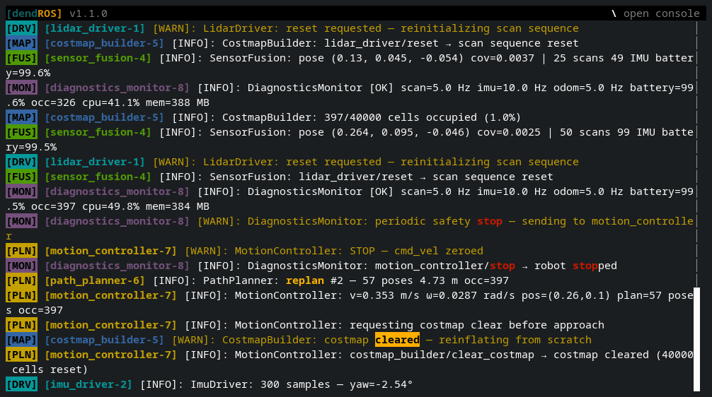
Matching uses smart case: all-lowercase text matches regardless of case, and any uppercase letter makes the match case-sensitive.
The matching text is highlighted in bold, underlined orange, like grep --color. If a find is active too, its highlighting takes precedence where the two overlap.
grep is a live filter. If nothing matches yet, the view is empty until a matching line arrives.
Combining filters
focus, level and grep combine: a line is shown only if it passes all of them.
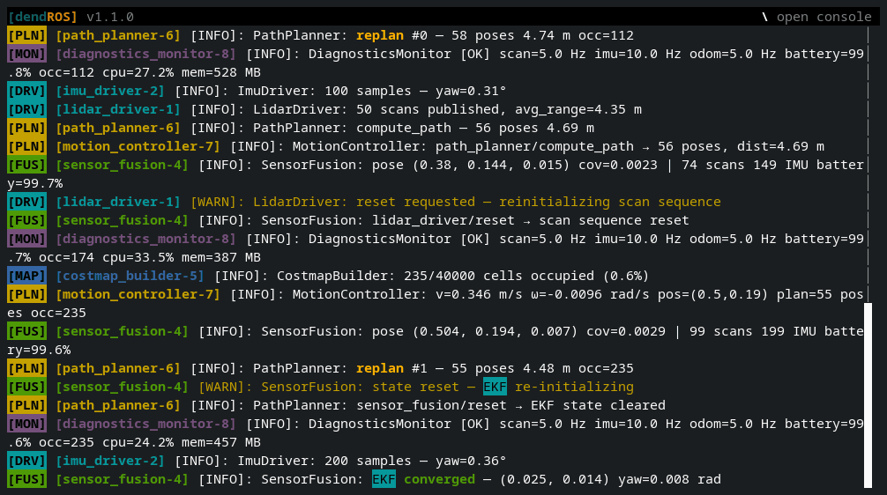
The active filters are shown in the header, for example focus planner_server · level warn · grep "timeout".
Running the same command again replaces its value, so \focus controller_server switches the focus without touching the level or grep filter.
find <text>
Searches the whole scrollback and jumps to the newest match. Unlike grep, nothing is hidden: you move between matches in the full log.
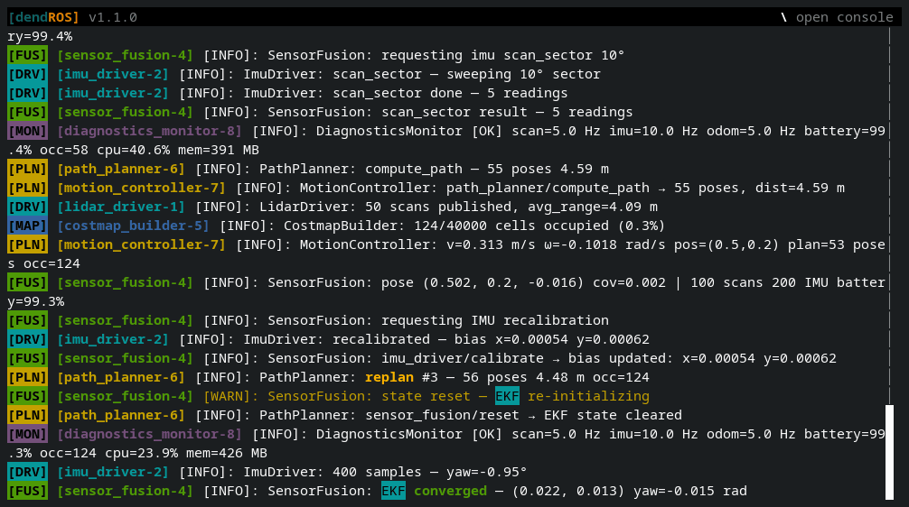
| Key | Effect |
|---|---|
| Tab | Previous (older) match |
| Shift+Tab | Next (newer) match |
| Esc | End the search |
Every match is highlighted, and the current line's matches are drawn in orange. The header shows the search and your position, for example find "exception" 3/7. Positions count from the oldest match, so when new matches arrive below you, the total grows while your position stays the same.
While a search is active the view stays on the current match instead of following new output. Press End, or scroll back to the bottom, to follow the tail again.
find uses the same smart case as grep, and searches only lines that pass the current filters. If nothing matches, the previous search (if any) stays as it was.
mute <node> / unmute <node|all>
Hides a noisy node's lines, without switching into a mode.
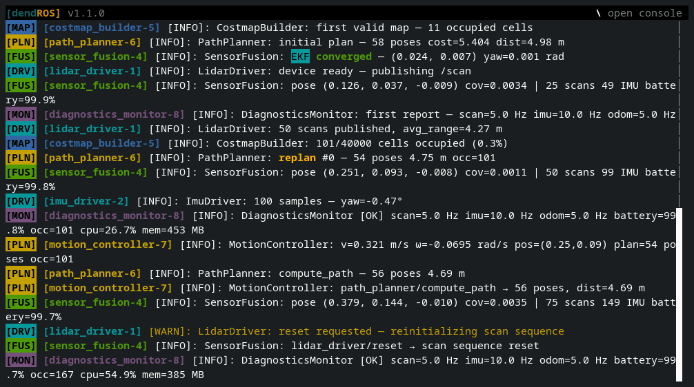
Nodes are matched like in focus: muting a container hides its components, muting a component hides only that component.
The header shows how many nodes are muted, for example 2 nodes muted. Esc does not unmute anything; only unmute and clear do. Mutes are saved with the run, so dendros reopen shows the run with the same nodes muted.
mark [label]
Inserts a separator line into the log, with the current time and an optional label:
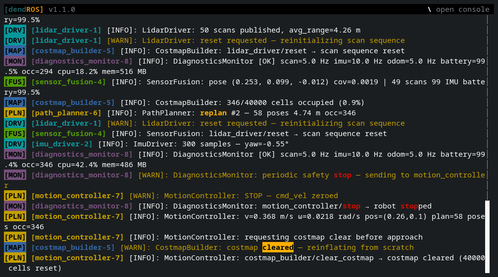
[bt_navigator-5] [INFO] [...]: BT tick #3: NavigateToPose running
──── 14:32:05 · sending goal ──────────────────────────────────────────────
[bt_navigator-5] [INFO] [...]: NavigateToPose goal received (3.5, 2.1)
Use it right before you do something to the running system (send a goal, call a service, unplug a sensor), so it's easy to see what was printed from that moment on. Later, \find sending goal jumps back to it.
- The rule spans the whole width of the terminal, also after resizing. Copying a mark gives just
──── 14:32:05 · sending goal ────. - Marks stay visible under every filter and mute, so they still separate the log while you
focusorgrep. - They're part of the log: copied with a selection, and kept by
dendros reopen. dendros mark <label>sends one from another terminal, which also works from a test script.- A reopened, finished run can't get new marks.
tee <file> [-c] [-a]
Saves the current view to a file: every line in the scrollback that passes the active filters (focus, level, grep, mutes), marks included. Lines are written whole, not as they're wrapped on screen.
\tee ~/bugs/planner_timeout.log # plain text
\tee -c ~/bugs/planner_timeout.log # with colors (view with less -R or cat)
\tee -a ~/bugs/planner_timeout.log # append instead of overwriting
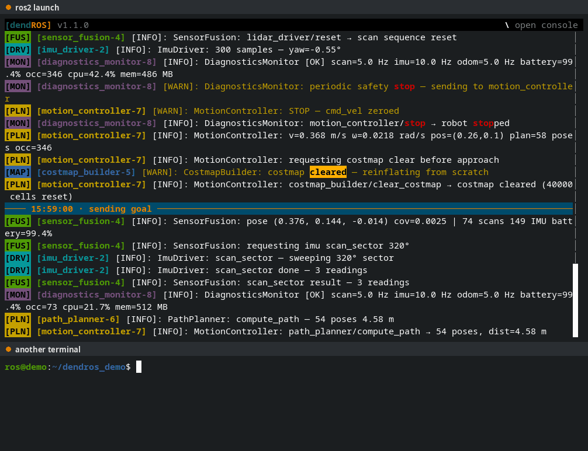
- It's a snapshot of what's there right now; it doesn't keep writing as new lines arrive.
- The header shows how many lines were written, or why the file couldn't be written.
- A relative path is relative to the directory the launch was started from. With
dendros teeit's relative to the terminal you type it in. - It works in
dendros reopentoo, so you can still save a run after it has ended. - With
-c, colors are saved as the 256-color codes the TUI displays.
A typical bug report: \focus planner_server, \level warn, then \tee planner.log, and attach the file.
clear
Removes every filter (focus, level, grep), every mute, and ends any find. The view goes back to the full, live log.
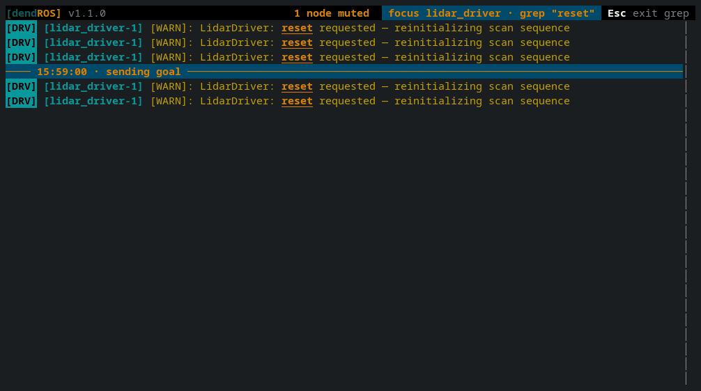
help
Opens an overlay listing every command and key. Scroll it with the arrow keys, Page Up / Page Down or the mouse wheel; close it with Esc, Q or \.
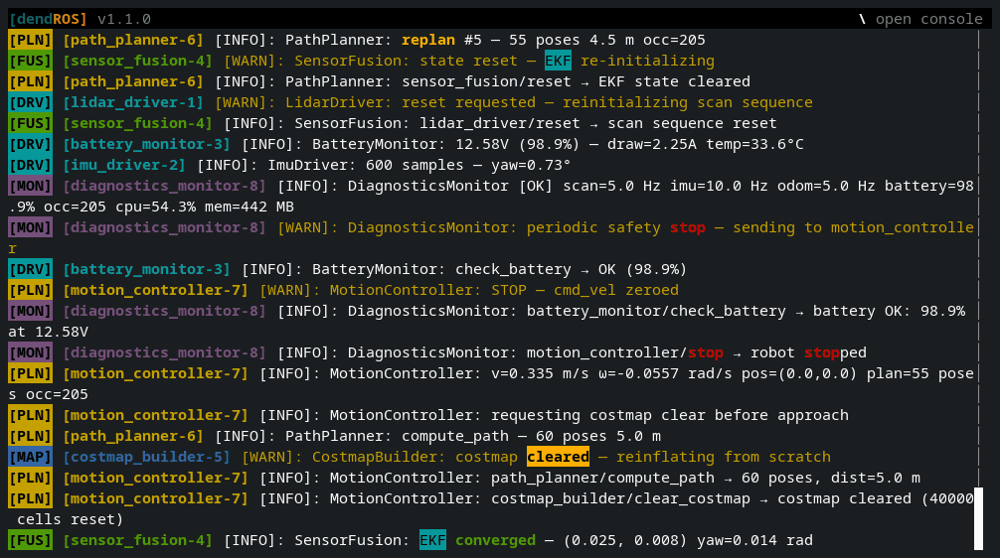
Leaving modes with Esc
focus, level, grep and find are modes. With the console closed, Esc exits the most recent one, so you can back out one step at a time:
\focus planner_server # 1st
\grep goal # 2nd
\find aborted # 3rd
Esc → ends the find
Esc → removes the grep filter
Esc → removes the focus
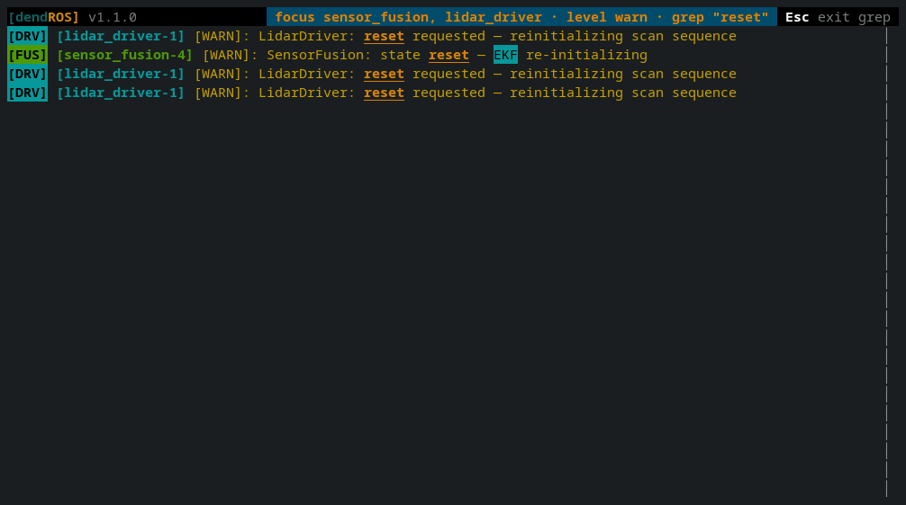
The header hint always names the mode the next Esc will exit, for example Esc exit grep.
Tab completion
In the console bar, Tab completes:
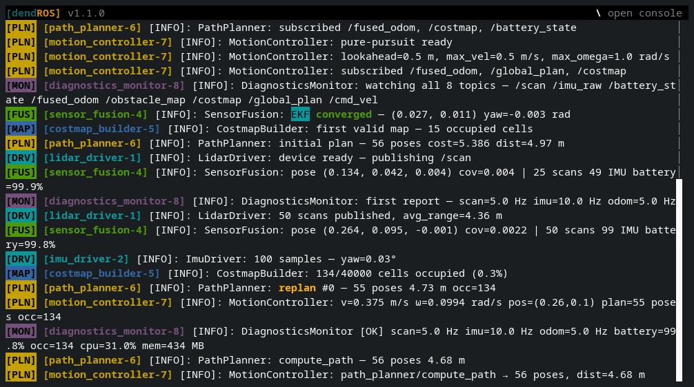
- command names
- node names, for
focus(each further name too, skipping ones already listed) andmute - muted node names and
all, forunmute - severity names, for
level
If several completions match, the first Tab fills in the part they have in common and lists the candidates in the bar. Pressing Tab again cycles through them, Shift+Tab cycles backwards.
Command history
In the console bar, Up and Down step through the commands you've entered during this launch, like in a shell. Whatever you were typing comes back when you press Down past the newest one.
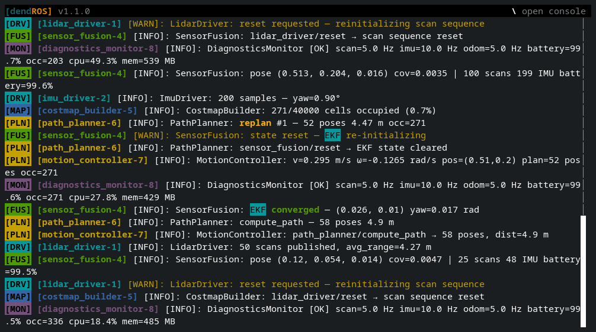
Every submitted command is kept, including ones that failed, so a typo can be recalled and fixed. History lasts for the whole launch, including across dendros disable/enable, but isn't saved between launches.
Keys reference
| Key | Where | Effect |
|---|---|---|
| \ | anywhere | Open the console bar |
| Enter | console bar | Run the command |
| Esc / \ | console bar | Close the bar |
| Tab / Shift+Tab | console bar | Complete / cycle completions |
| Up / Down | console bar | Previous / next command |
| Tab / Shift+Tab | during find |
Older / newer match |
| Esc | log view | Exit the most recent mode |
| Page Up / Page Down, Up / Down, wheel | log view | Scroll |
| Home / End | log view | Oldest line / follow the live tail |
| Mouse drag | log view | Select and copy |
| Q | after the launch exits | Quit |
Notes
- Search text and grep text can't contain
\, since typing it closes the console bar. - Node names are matched by the node's real identity, not by the displayed text, so filters work the same with any
tag_position,show_timestamporshow_logger_namesetting. - Filters only change what is displayed. Copying, saving for
dendros reopenand the scrollback limit all work on the full log.